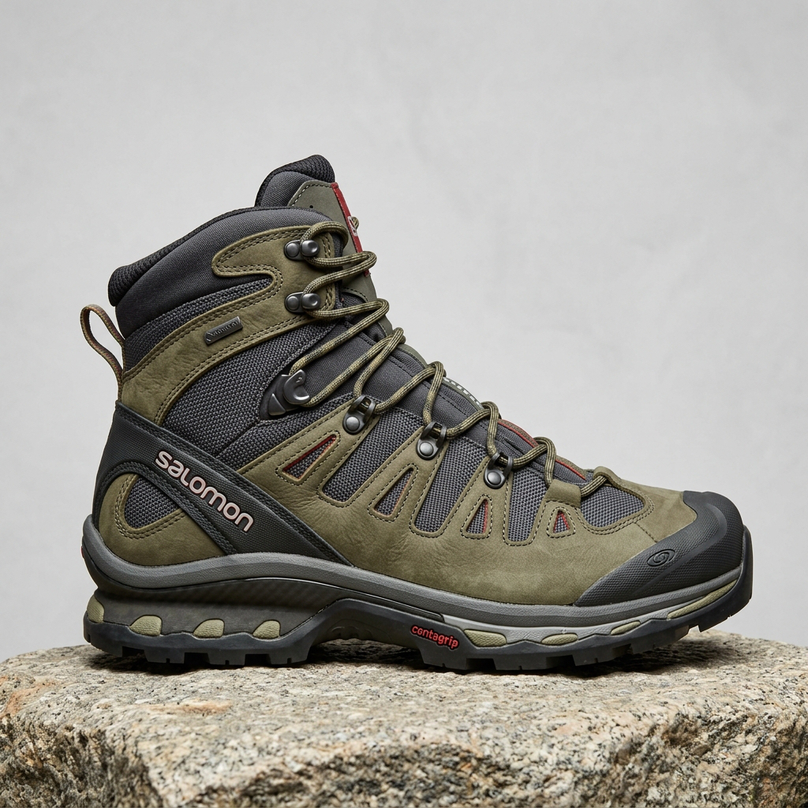

OUR MISSION
品牌故事
關於對舒適底線的絕不妥協，以及對時尚美學的極致追求。
👟 劉佳昀的鞋子專賣店｜舒適每一步，穿出你的自信風格
「舒適、時尚、品質」—— 為每一步打造最好的選擇。
還在尋找一雙兼具舒適與時尚的【鞋子】嗎？無論是日常通勤、運動健走、約會穿搭，還是正式場合，
劉佳昀的鞋子專賣店都能滿足您的需求。我們深知每個人對【鞋子】【尺寸】與【鞋子】【尺碼】的需求
不同，因此精選各式鞋款，並提供【久站】【鞋墊】等周邊配件，讓您穿得舒適、走得安心，也能展現屬
於自己的獨特風格。
👠 我們的熱門鞋款
👟 休閒與職場系列
採用輕量、透氣材質，提供舒適的穿著體驗。若您在尋找【男休閒鞋】【推薦】款或【休閒鞋】【推薦】款式，
我們有多種選擇。此外，精選【樂福鞋】【推薦】單品，不僅質感優異，更能輕鬆掌握【樂福鞋】【穿搭】技巧；
針對工作需求，我們也是您尋找【工作鞋】【推薦】或【防水】【工作鞋】的好去處，同時提供各類【平底鞋】
【推薦】款式供日常選購。
🏃 運動與機能系列
我們提供豐富的品項，包含深受跑者喜愛的【慢跑鞋】【推薦】與【跑步鞋】【推薦】，以及幫助您維持節奏的
【健走鞋】【推薦】。針對場地需求，亦有【籃球鞋】【推薦】、專業的【登山鞋】【推薦】與【兒童】【足球鞋】。
若您有特殊腳型需求，歡迎嘗試我們的【寬楦】【運動鞋】系列，保證讓您擁有更好的【運動鞋】【推薦】穿著體驗。
👞 特殊功能與流行系列
我們提供【水陸兩用鞋】及多款【防水】【休閒鞋】，讓您雨天無懼；若需要額外防護，也有【防水】【鞋套】可供選購。
針對時尚趨勢，我們主打【瑪莉珍鞋】【穿搭】風格，以及風靡社群的【洞洞鞋】【推薦】與經典【芭蕾】【平底鞋】。
若喜愛俐落外型，【厚底】【樂福鞋】更是不可錯過的選擇。
💎 為什麼選擇劉佳昀的鞋子專賣店？
✔ 嚴選高品質與專業推薦
無論是尋找【安全鞋】【推薦】，或是造訪我們專業的【安全鞋】【專賣店】，我們精選耐穿、舒適的材質，兼顧美觀與實用性。
✔ 多元款式一次滿足
從日常穿搭到功能性需求一應俱全，我們也提供【白鞋】【清潔】的小撇步，讓您的愛鞋常保如新。
✔ 舒適穿著體驗
符合人體工學設計，柔軟鞋墊與耐磨鞋底，減少長時間行走的不適感。
✔ 貼心服務
我們不僅販售鞋子，更致力於解決【鞋子】【除臭】等惱人問題，提供全方位的足部呵護。
💰 價格透明，安心購物
我們相信，高品質不一定代表高價格。
👟 各類熱門款式提供【防水鞋】【推薦】等多種優惠價格，輕鬆入手。
🚚 快速出貨，讓您不用久等。
🎁 不定期推出折扣活動與會員優惠。
⭐ 顧客滿意，是我們最大的成就
無論您喜歡簡約風、運動風，還是正式商務風格，
劉佳昀的鞋子專賣店都能陪伴您走過每一段精彩旅程。
📍 歡迎立即選購
🏪 店名： 劉佳昀的鞋子專賣店
📞 客服專線： （請填入您的電話）
📧 客服信箱： （請填入您的 Email）
🌐 官方網站： （請填入您的網站）
💬 LINE 官方帳號： （請填入您的 LINE ID）
劉佳昀的鞋子專賣店——每一步都舒適，每一天都自信。

15+
年卓越工藝
跨越極限的步履藝術
Solexa 成立於 2011 年，總部坐落於前衛的設計之都。創辦團隊由前航太工程師與資深義大利鞋匠共同組成。我們將研究太空人緩震系統的航太級泡棉技術，大膽引入日常鞋履研發，徹底打破了「時尚與舒適不可兼得」的傳統迷思。
十多年來，Solexa 秉持著對每一毫米曲線的挑剔，以及對力學平衡的精準掌握。每一款鞋在問世前，皆歷經超過 20 萬次的動態受力測試與多名專業跑者的試穿調整。我們不只做鞋，更在為您規劃每一次踏實向前的精彩旅程。
一雙真正舒適的鞋，會讓您忘記它的存在，卻能支持您走得比想像更遠。
— Solexa 設計總監 Leo Viancci
CORE VALUE
我們的三大堅持
透過無數次的淬鍊，只為呈現最完美的穿著體驗。
極致人體工學
全方位掃描萬名亞洲消費者足部數據，量身打造符合亞洲腳型的微寬楦頭，有效釋放趾間壓力，預防長時間行走產生的不適。
材料科技創新
與國際頂尖化學實驗室合作開發 SuperResilience 避震發泡大底，具備卓越抗形變能力，能持續提供均勻、高效的回彈推進力。
100% 綠色製程
全線產品導入無溶劑水性膠貼合技術，並精選海洋回收紗編織透氣面料，在追求舒適的同時，我們亦克盡維護生態永續之社會責任。